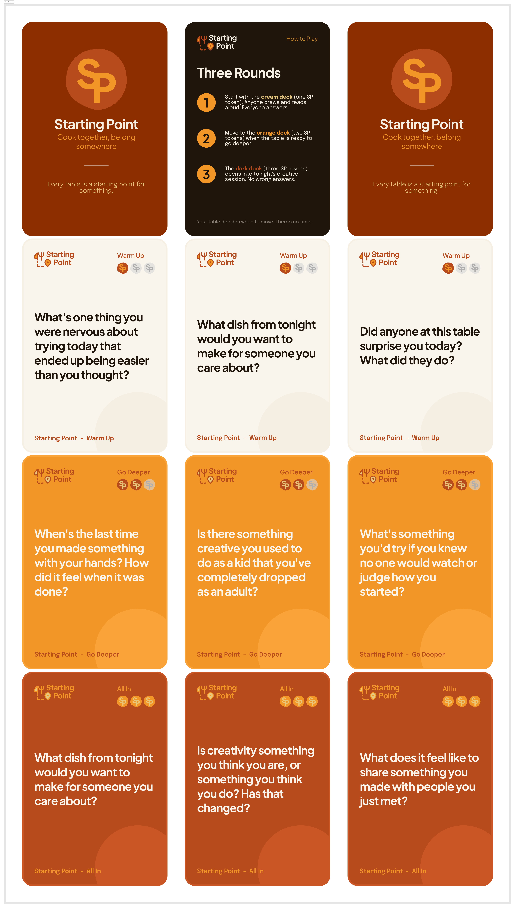
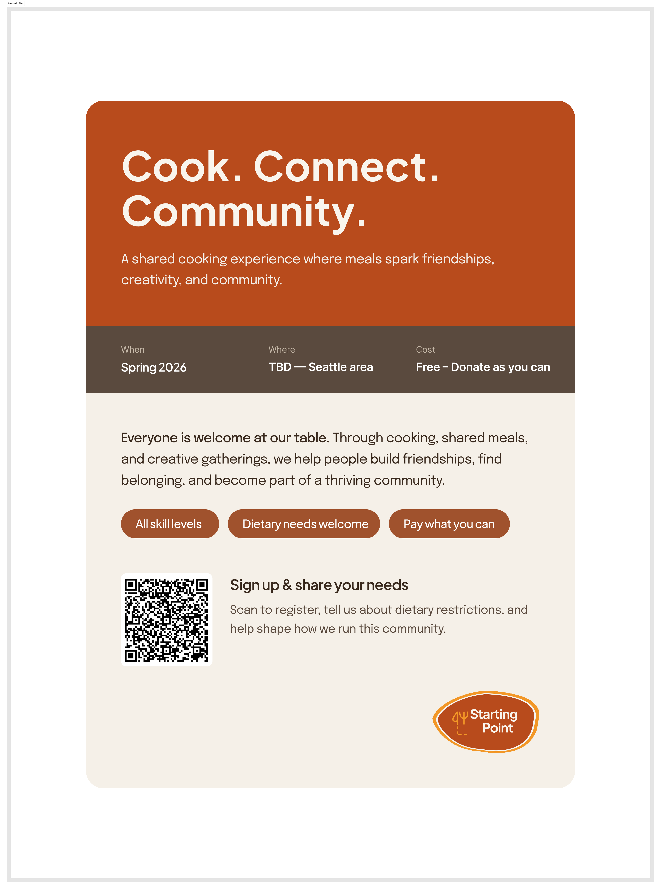
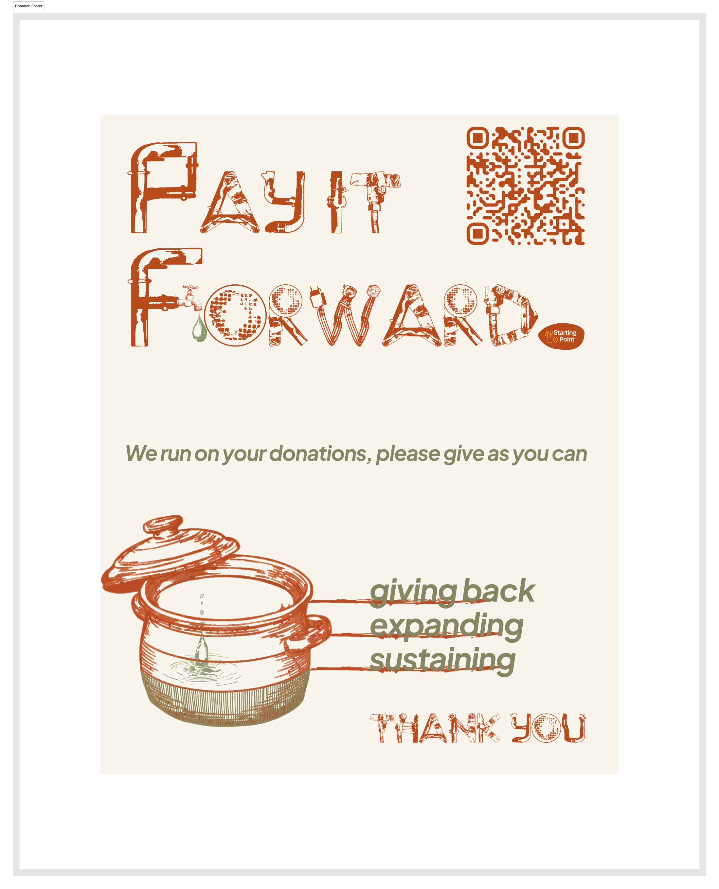
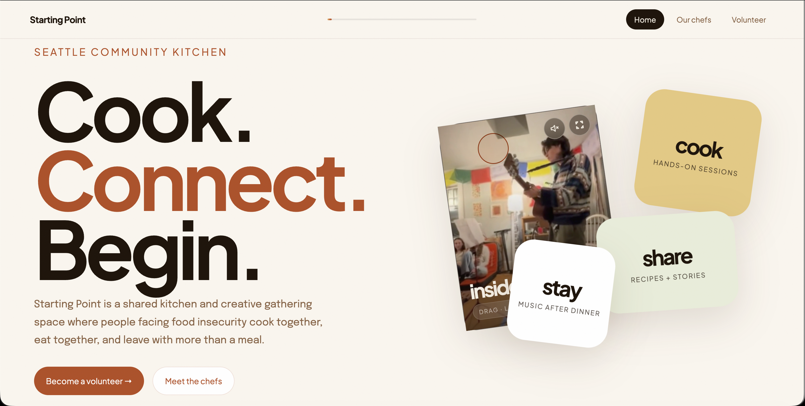
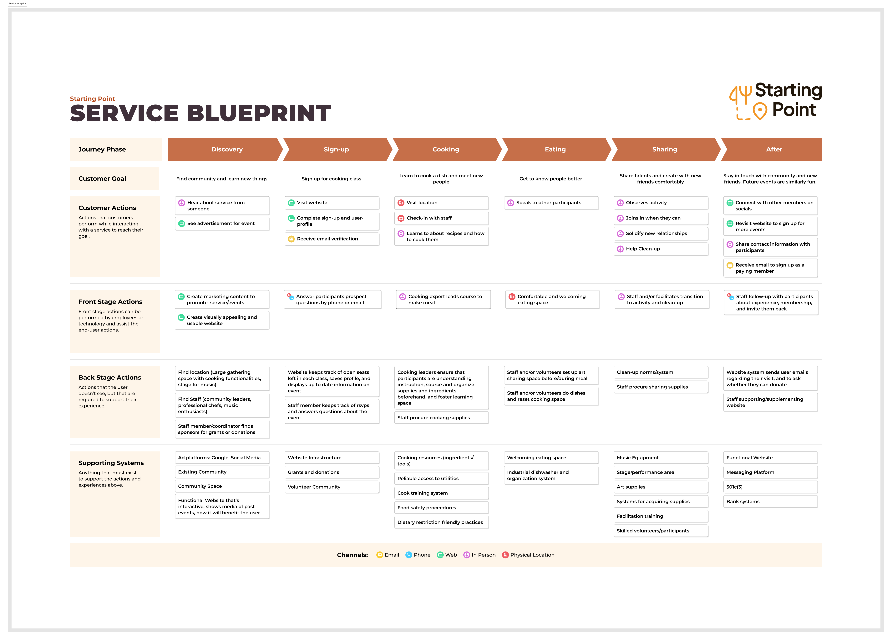
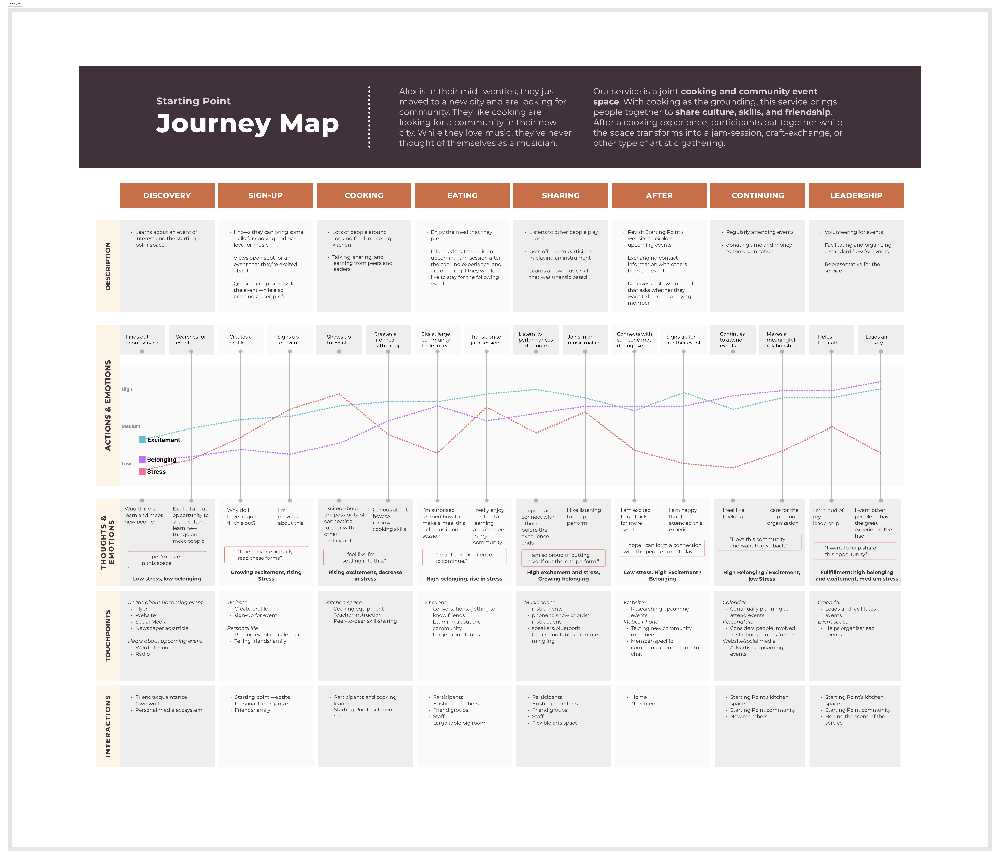
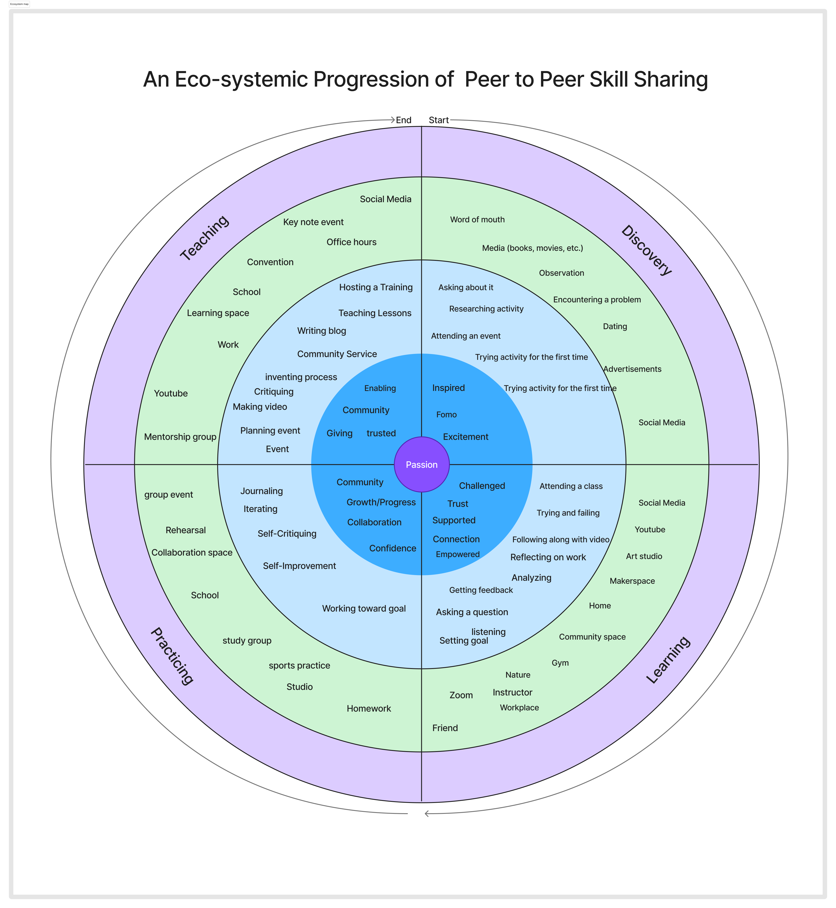

From blueprint to reality
Our high-fidelity prototype is a live website demonstrating the discovery and sign-up phases of the service blueprint — the moments where newcomers first encounter Starting Point and decide to join.
The prototype focuses on the most critical conversion moments: a newcomer discovering Starting Point, reading about what to expect, and committing to their first event. Every design decision reinforces accessibility, warmth, and low-barrier entry.
Home — Cook. Connect. Begin.
Immediately communicates the mission and makes the first action obvious: find a session that fits you.
Our Chefs
Introduces community leaders who shape each event — building trust and cultural connection before arrival.
Session Finder
Filterable by category (cooking, art, music) so participants can self-select the experience that matches their comfort level.
Volunteer & Donate
Clear pathways for contributors and transparent donation impact: "$125 supports 10 meal seats, 5 creative kits, and 1 session moment."
Cook. Connect. Begin.
A shared kitchen where people cook together, eat together, and leave with more than a meal.
Design Artifacts
Physical and digital artifacts created to support the full service experience.

Physical ArtifactTransition Cards
A fun game with 3 levels of depth to develop personal conversations with the people around the meal table to enable a smooth transition from eating to sharing a skill or being creative.
 Communication Artifact
Communication Artifact
Experience Cards
A visual representation to show the potential journey of a participant discovering to continuing our service communicating the emotional arc.

Marketing ArtifactCommunity Flyer
A designed flyer communicating the service's value proposition, event logistics, and sign-up pathway which includes a QR code to registration and dietary needs intake.

Physical ArtifactDonation Poster
Displayed at the end of events to communicate the value of one of the ways our service sustains itself by allowing the community the chance to give back and provide support for other people.

Digital PrototypeStarting Point Website
A live website covering discovery, chef introductions, session finder, volunteer sign-up, and donations. The digital face of the service for newcomers. Visit the live site →



Service Blueprint, Journey Map & Ecosystem Map
Full-fidelity service blueprint, 8-phase customer journey map, and the ecosystem progression documenting the complete participant experience with emotional arcs and system-level actions.
Role-playing the service in a real kitchen
Instead of making a polished video, we ran an in-depth role play with 10 participants, including ourselves, over 2.5 hours. We taught a brief history of empanadas, prepared ingredients, shaped and baked them, and ate together.
The large, loud kitchen made high-quality audio and video difficult, but the conversations during cooking were more valuable than a polished recording.
Planning was the biggest challenge and should be detailed more clearly in the blueprint, especially for organizers.
A journey map for the organizer would help the team understand staffing, prep, materials, timing, and facilitation burden.
Inspired by a participant, we shifted the target demographic toward people experiencing food insecurity.
Many services provide food; Starting Point aims to meet needs across Maslow's hierarchy by adding dignity, belonging, skill-building, and creative contribution.
The service creates enough community value to justify donations and grants that can sustain a dedicated space.
Our central design question evolved from broad skill-sharing into a more specific service challenge: how might we create a financially accessible, human-centered cooking service where people facing food insecurity can gain practical skills, share cultural knowledge, feel dignity instead of need, and eventually move from guest to contributor?
What must guide our design
Six design requirements derived from research, co-design, and field observation — each grounded in evidence and tied to a core principle that will maintain design integrity as the service evolves.
Service Values
Shared interests should build a strong user community, validated through co-design and survey feedback.
Participants need agency and freedom to get what they need from the service.
People will only engage if barriers are limited, so events should be free or suggested-donation only.
Digital materials should follow WCAG guidelines, color audits, and usability testing.
Interfaces and events should be validated for satisfaction and meaningful engagement.
The service must help users gain skills in a way that feels safe and credible.
Participants should leave feeling that their time was well spent.
Starting Point should introduce new skills, cultures, and ways of thinking.
Design Requirements
Build Shared Routines That Bring People Back
"They always know to start with scales, so much so that I don't even have to tell them, and they'll sit down and they'll start."
Recurring, predictable rituals reduce anxiety for newcomers and build ownership for returning members. The service must establish consistent event structures that participants internalize over time.
Foster Community & Belonging
"Space fulfills the need of… Yeah, like, belonging and, like, not being alone, and having a place to create."
Community-building is not a byproduct of Starting Point — it is the primary output. Every design decision must ask: does this help people feel they belong here?
Support Skilled Volunteers
"They need to know a lot to be a woodshop volunteer. It's not like anybody can do it… it's kind of a big commitment."
Expert contributors require onboarding, trust-building, and ongoing support. The service must create a clear pathway from participant to skilled, confident volunteer.
Balance Instruction With Open Practice
"Students frequently interact with each other by sharing feedback, observing others' reviews, and building off shared critiques."
Learning deepens through peer interaction, not just expert instruction. Event formats must create structured open time for participants to observe, share, and build off each other.
Limit Barriers of Entry
"Even this, like, having free drop-in programs, like, that is mutual aid… and that is, like, a really big core of who we are."
Pay-what-you-can pricing, dietary accommodation, multi-language support, and welcoming framing are structural requirements that define Starting Point's identity — not optional extras.
Enable the Transition from Learner to Contributor
"There is a clear mix of nervousness and excitement, as students want to make a strong impression while also being eager to learn."
The most powerful moment in a participant's journey is when they first teach something to someone else. The service must deliberately create these moments and honor them.
Design Principles
The Table Is the Interface
Every physical and digital touchpoint should feel as warm, unhurried, and human as a shared meal. We design for the experience of sitting down together — not for efficiency or throughput. If an interaction would feel cold at a dinner table, it has no place in Starting Point.
Make Watching Easy, Asking Optional
Since people default to observation before participation, the space and the service must make it effortless to see what others are doing. Explicit asking should be one of many pathways, not the only one — and never required.
Confidence Over Perfection
The goal of every cooking session, music moment, and creative gathering is to send participants home feeling capable — not necessarily skilled. Progress must be visibly celebrated over polish, and the structure of every event should reinforce this.
Design for the Transition, Not Just the Event
Each event is one step in a longer journey. The service must actively design the pathway from first-timer → regular → volunteer → leader — not leave that evolution to chance. Every touchpoint should have a "what's next" built in.
AI Decision: Keep the Core Service Human
For the current design, we chose not to incorporate AI into the main participant experience because Starting Point is built around person-to-person interaction, human mentorship, community leadership, and belonging. An AI agent could help with sign-up or information navigation, but that would add training, maintenance, customer-service burden, and assumptions about users' comfort with AI without strengthening the core in-person service.
- AI should not replace welcome, mentorship, or facilitation. A person should welcome someone to their first event, not a chatbot.
- AI may be considered only as human-centered assistance. Future tools could support onboarding, recommendations, or opportunity matching, but should remain optional and transparent.
- Human oversight is required. AI can misinterpret context, make mistakes, or reinforce bias, so significant community decisions must stay human-mediated.
- Users need agency. If recommendations are AI-generated, users should be told and should be able to question, ignore, or override them.